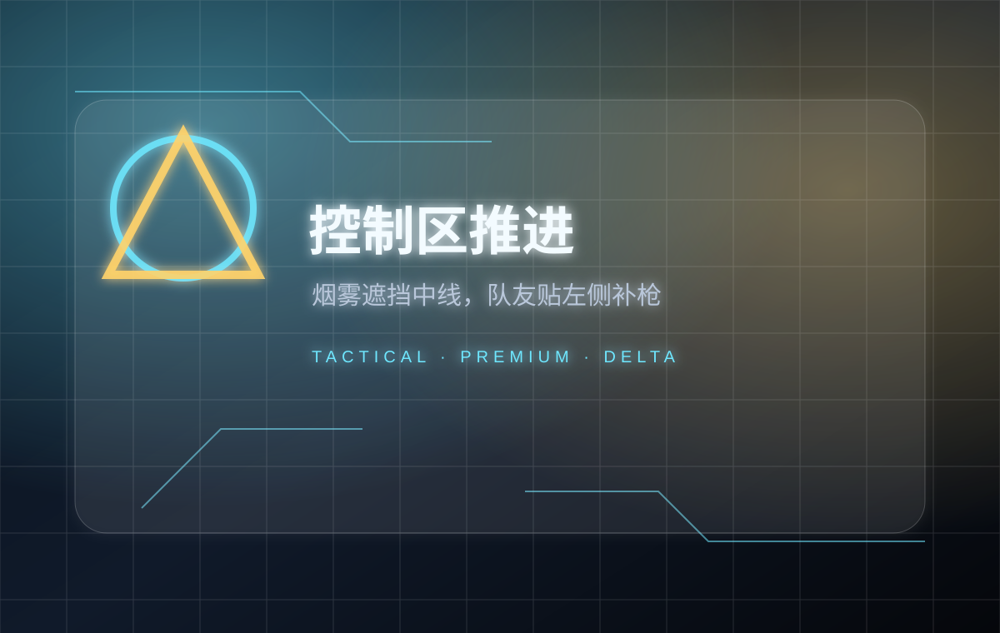
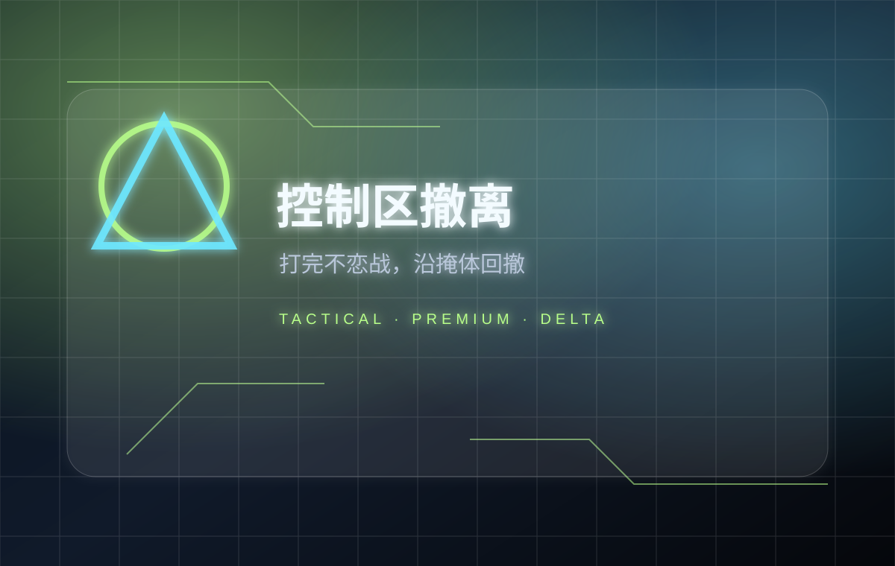

步骤 1：外侧观察
队伍先贴外侧矮墙，不要直接冲中线。第一个人观察二楼窗口，第二个人看右侧门洞，第三个人保留烟雾和补枪位置。
外侧起手，先控二楼窗口和中线交叉火力，再用烟雾切线推进。
队伍先贴外侧矮墙，不要直接冲中线。第一个人观察二楼窗口，第二个人看右侧门洞，第三个人保留烟雾和补枪位置。

如果中线有人架枪，先用烟雾切断视野，再沿左侧掩体推进。不要三个人挤在同一个入口。

打完后不要长时间停在控制区门口，优先补状态、搜关键物资，然后沿掩体撤回或转二号路线。